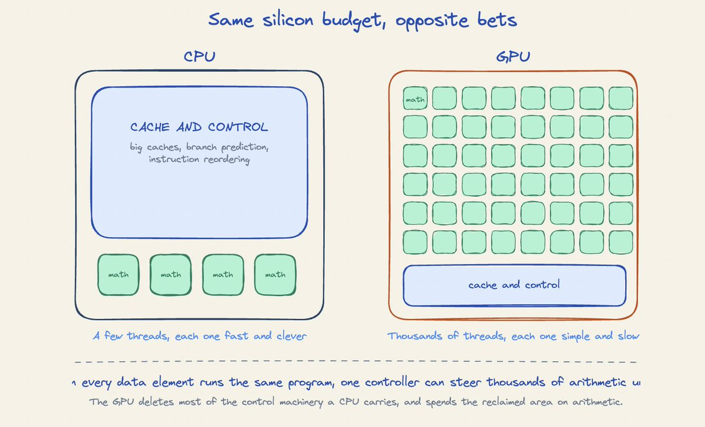
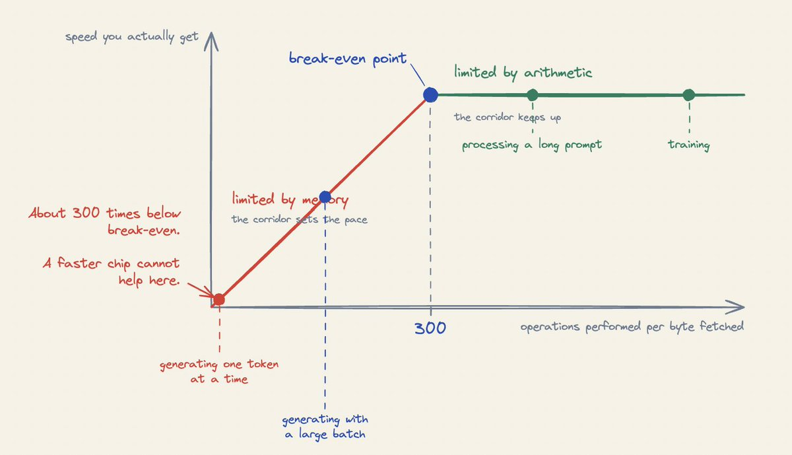
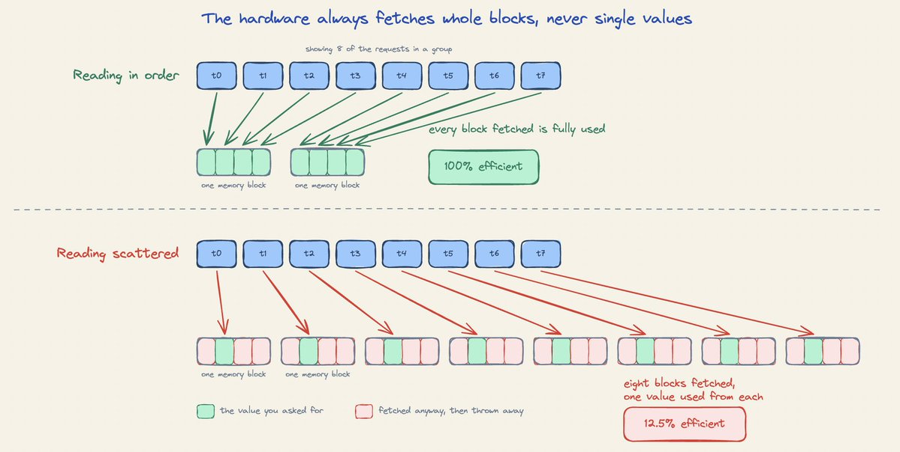
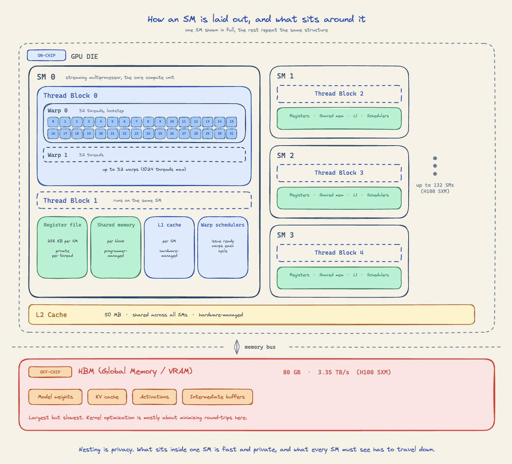
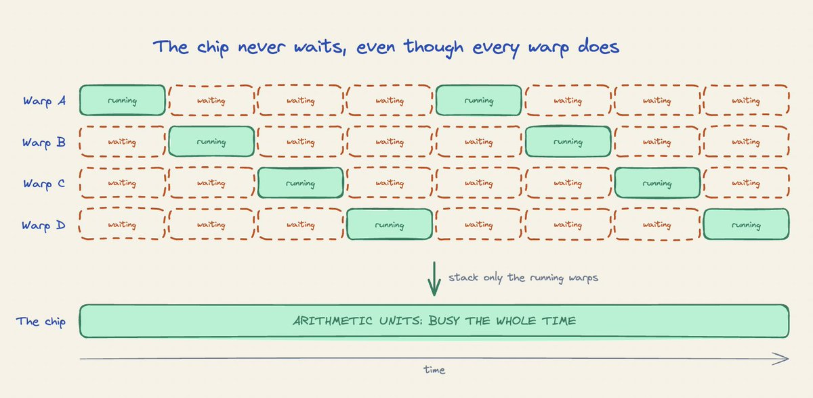
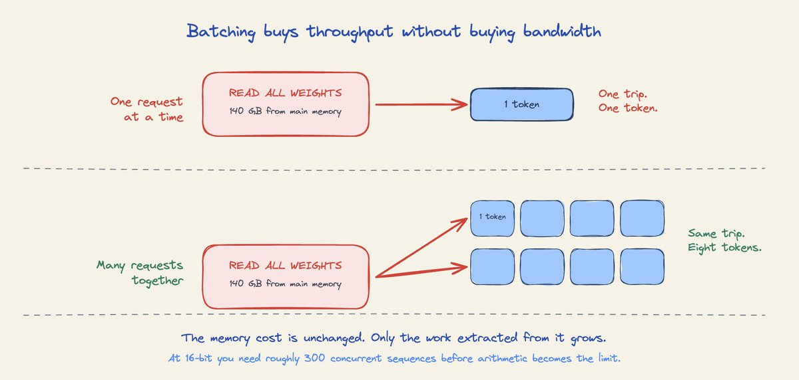
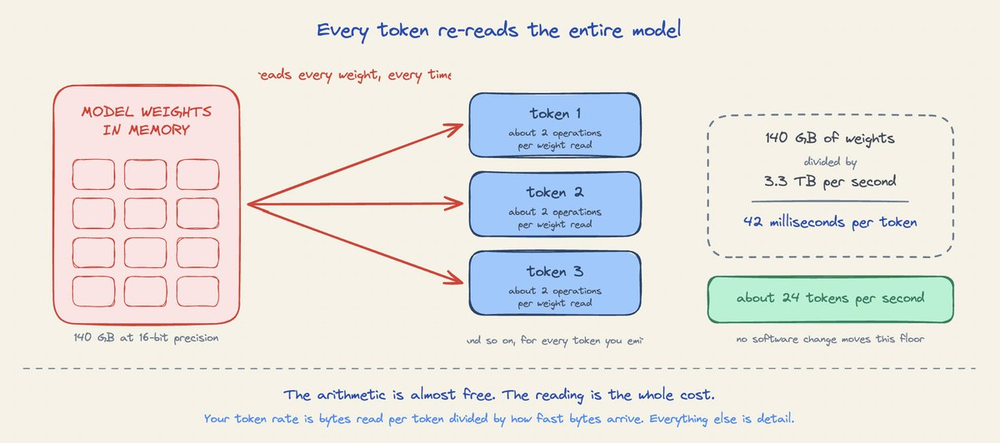
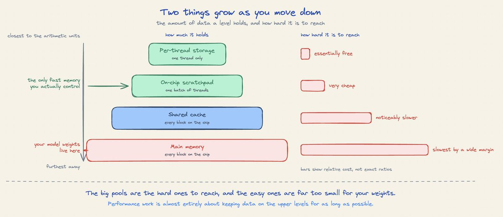
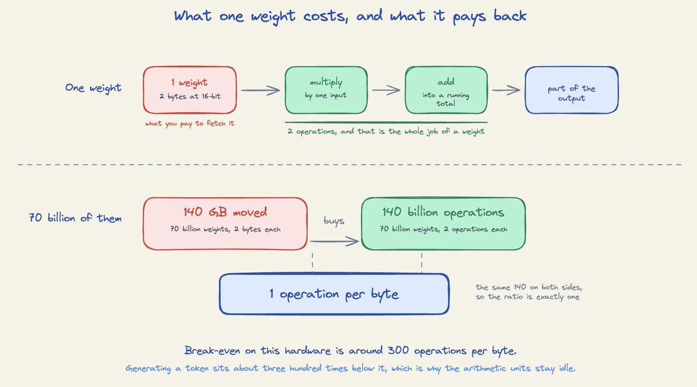
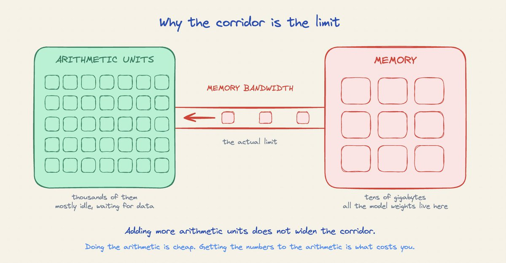

有个困惑几乎所有开始跑大模型服务的人。你租一块顶级数据中心GPU，spec单上说它每秒能做接近千万亿次算术运算。你把一个700亿参数的模型加载上去开始生成文本，看利用率监视器，读数很高，一切健康。
然后你数token：每秒只有几十个，而这颗芯片的标称算力是每秒千万亿次。几乎全部算术能力都没在工作。文章一句话点破：做算术很便宜，把要做算术的数字取出来很贵。这份直觉一旦建立，量化、投机解码、连续批处理这些技巧就不再是需要死记的招式，而是显而易见的推论。
先讲整个设计立足的一个事实：做算术是便宜的，把要做算术的数取出来是贵的。这句话第一次读会觉得很怪：乘法听起来才是难的部分，搬一个数好像微不足道。但在现代硬件上恰好相反，而且差距不小。

一个有用的类比是车间：算术单元是工作台，几千个，挤在房间中央；数据住在仓库里，仓库与车间之间只有一条走廊。工作台消费材料的速度远快于走廊送货的速度。再添工作台也没用，因为走廊本来就是极限：走廊就是所谓的内存带宽。

之后的每一个性能技巧，本质上都是让每次走廊送货能产出更多工作的方式。
这不是暂时的工程短缺，而是长期趋势：在近几代加速器上，算术能力的增长速度比内存带宽快好几倍。每颗新芯片能做多得多的数学，却只能取稍多一点的数来做。
于是这种失衡每一代都在恶化，而不是变好。减少数据搬运的技巧随时间越来越值钱，裸算术能力则越来越不能说明一颗芯片实际跑起来的表现。
CPU围绕「让一条指令序列尽快跑完」来设计：大缓存让数据就在附近、预测硬件猜测下一步、重排逻辑在等待时继续工作：这些都在服务单一工作流，且都很吃芯片面积。
GPU押相反的赌注，因为它服务的工作负载有个特别的性质：图形里每个像素跑同一个短程序、处理不同数据；神经网络里张量的每个元素享同样的待遇。当程序在数百万个数据元素间完全相同，就不再需要每元素一个控制器：一个控制器就能驱动几千个算术单元，让它们在同一指令下处理不同值。

这就是全部诀窍：GPU删掉CPU的大部分控制机器，把省下的面积花在算术单元上。原始数量对比很悬殊：高端服务器CPU同一时刻推进几百个线程，数据中心GPU在相近功耗下每个时钟周期推进数万线程。代价是GPU线程是种弱得多的东西：它不能走自己的路、单看不快，它只是极宽极简单机器里的一条车道。
有个值得学的词：硬件不是一次调度一个线程，而是按固定32个一组、锁步移动并共享同一条指令，这一组32个就叫warp：芯片实际工作用的就是它。
因为一个warp共享同一条指令，当它遇到分支发散（部分线程走一个分支）时，warp要串行跑两条分支，耗时等于两者之和。这只在分歧发生在warp内部时才花钱；不同warp之间分歧毫无代价。
取数据慢，CPU和GPU都面对。CPU用缓存和预测技术试图让等待不发生；GPU接受等待、并安排总有别的事可做。
机制是这样的：芯片上挂载的工作远比它能并行的多（上万个线程，对应几十个物理执行单元）。当正在跑的warp向主存取数时，它停顿；调度器立刻切到另一个早已就绪的warp。算术单元保持忙碌，每个单独的warp大部分时间都花在等待上，但整个芯片看起来永远满载。

warp间切换几乎零成本：这解释了为什么GPU带着海量快速片上存储。也正因如此，监视器里的利用率数字会误导：它能显示100%，但那只是「总有warp在跑」的意思。
如果只带走一条可操作的经验，就是这句：GPU需要大量独立的并行工作才能跑好。给它一个小任务，它会闲置；给它几百个独立任务，它会全力前进。这不是怪癖，而是设计在按预期工作。
数据并不简单地「活在内存里」，它住在几个不同距离的层级之一。值得认识四级：每线程存储（最近最快，每个线程抓一把寄存器）；片上暂存（每个SM自带的一小池极快内存）；共享缓存（整个芯片共享的几十MB）；主存（几十GB、存放模型权重的大池）。

越往下走，池子越大、速度越慢。两端差距可观：一个线程读寄存器内的值与读主存内的值，代价差两个数量级以上。你的权重住在最底层：最大也最慢的那级，这决定了推理的表现。
取内存要付出两种独立的代价，并分开看待。第一种是等待：你请求数据、过一会儿才到。硬件用上面那套机制替你处理：总有些别的warp可切，等待被隐藏。
第二种是通道宽度：单位时间只能移动这么多字节。这个没有任何机制能隐藏，它是硬天花板：也是本章之后所有计算都围绕带宽展开的原因。
GPU不是一个巨大的算术池，而是分成大量流式多处理器（SM）。每个SM自带前两级的副本：自己的寄存器文件（每线程存储）和自己的暂存器（共享内存）。工作以线程块为单位到达：一批切给某个SM的线程。
你从不亲自选这种划分，你只选任务块的大小，SM再决定细节。这就是为什么批大小几乎总是32的倍数：要250个线程会被进位到256。最大线程块是1024，折合32个warp。也是共享内存为什么有用、名字从哪来的原因：同一SM里的线程共享它。
所有SM之下是L2缓存，每个SM都能到达；再往下是主存。这张图解释了你会反复遇到的取舍：任何想让数据更近的努力都在用芯片面积换取带宽。

现在可以把中央思想说精确了。对任一个在GPU上跑的操作，数两件事：要完成多少次算术运算，以及要从内存读多少字节。两数相除，就是这个操作的work per byte：正式名称是算术强度。
值得对比两端：数组每元素乘二，每个值只用一次，算术强度极低；两个1024×1024矩阵相乘则相反，每个元素被读入后参与上千次运算：单次取数能回报上千次计算，这是千倍的差距。
每颗芯片都有一个阈值，来自一次除法：峰值算术速率 ÷ 峰值内存带宽。以H100 SXM5（大多数人租的主力）为例：989万亿次每秒 ÷ 3.35 TB/s ≈ 300。

这颗数字在profiling之前就能告诉你很多：操作低于 ~300受内存限制，加算力毫无用处；高于 ~300受算力限制，加带宽没用。阈值属于硬件，你的工作负载落在哪边由你决定。低于300时，你是在带宽受限区；高于300时在算力受限区。这就是著名的roofline模型（屋顶线模型）。
把这套框架套到语言模型推理上，开篇的谜团迎刃而解。生成文本是一个token一个token来的，而每个新token都要过一遍所有权重。先看单个权重：它夹在两个数字之间，被一个输入乘一下、再加一次，就两个操作：两个FLOP。
放大看：700亿参数的模型每次前向约1400亿次操作。数字节：16位精度每个权重2字节，要读约140 GB。合起来：1400亿次操作，由140 GB的流量供养：work per byte约等于1。

盈亏平衡阈值是约300，而单请求生成把工作负载压在约1。这是为什么算术单元闲置：不是坏了，也不是代码或驱动的问题，更大GPU也没用：你看到的正是这块硬件最重要的事实。
一旦接受生成受内存限制，你的token速率就能直接用带宽算出来：700亿参数、16位精度占约140 GB，H100带宽3.35 TB/s，所以140 GB ÷ 3.35 TB/s ≈ 42毫秒：这是产出一个token所需时间，因为每个token都要搬一遍全部权重。

转成速率：每token 42毫秒，一秒约24个token。再多的软件巧思也救不了：下限由「每token必须读多少字节 ÷ 带宽」决定。这就是那块芯片上你可能得到的token吞吐。
还有第二个阶段，落在分界线的另一侧。当你发送prompt，模型一次性处理所有token（并行），而不是一个接一个，work per byte立刻攀升：prefill通常是算力受限，而生成是内存受限。
同一个模型的两个阶段瓶颈相反。明白这一点，很多关于「为什么有时候慢、有时候快」的困惑就解开了。
框架在这是最值钱的：一旦你把性能看作work per byte，就只有两件可改的事：增加每次取数完成的工作，或减少要取出的字节。

批处理（batching）增加工作：同时处理多个请求，每个权重只读一次。十个并发请求让work per byte提高十倍、不额外背带宽。在16位精度下你需要一批足够的请求把比值抬过盈亏平衡线。
算子融合（fusion）减少字节：三个逐元素操作分开跑，每一步都从主存读；融合成一个，中间值从不离开芯片：编译器做融合能带来巨大加速。
让数据就近（共享内存）也减少字节：把一块数据载入共享内存，做掉所有需要的计算。FlashAttention是最著名的例子：普通注意力要写出大的中间矩阵又读回来；共享内存版把这块流量压掉。算术基本不变，内存流量崩塌。
量化（quantization）直接减字节：8位存权重，每个权重尺寸减半，每token要读的字节减半，work per byte翻倍。代价是精度下降、丢失信息。
访问模式有个细节值得知道：内存不是一次搬一个值，而是抓固定大小的块。当线程读分散地址时,每个线程拉进一整块、却只用其中一小部分，浪费带宽。实际后果是内存布局是一项性能决策：保持顺序读取能大幅提升有效带宽。
另外，发送工作到GPU有固定开销：CPU要先准备再把它移过去。如果模型跑很多小操作，可能CPU忙而GPU闲：这也是overhead-bound（开销受限）的一种。
要判断自己处于哪种情况，跑的时候测两件事：实际每秒读多少字节、实际每秒做多少运算。三种结果盖住几乎所有场景：带宽逼近上限、算术远低于 → 内存受限，加带宽或减字节；算术逼近上限、带宽远低于 → 算力受限，加算力或减运算；两者都远低于上限 → 开销受限或你的任务太小、调度器喂不饱它。
规格跑得很快，但值得辨别其中哪些会变、哪些不变。变的是数字：内存容量、带宽、算术速率。不变的是形状：算术仍然比取数便宜得多，差距仍在拉大。
如果可以押方向，就押在减少数据搬运的技巧上：这是长赢的赌注。框架的价值只增不减。
参考：https://x.com/akshay_pachaar/status/2087928032904523980